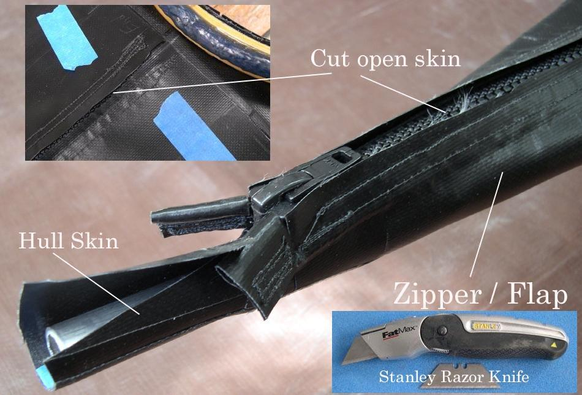

| Zipper to Stem Attachment ( 8 of 11 ) | Menu Previous Page Next Page |
|

Gluing and Cutting Zipper Open - Apply heat and hand pressure to glue the PVC flap / zipper to the deck. Remove the masking tape, and using a razor knife, cut along the centerline of the flap to gain access to the zipper. Apply just enough pressure to cut the PVC, but not enough pressure to cut into the zipper itself.
|
|